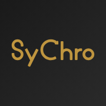

The Steps Towards a New Thinking Approach
A journey through the evolution of the systemic approach in sustainability and design
Explore SyChro
About
Contribute to the Database
Contacts
Add SyChro to your home screen

Add SyChro to your home screen
Got it